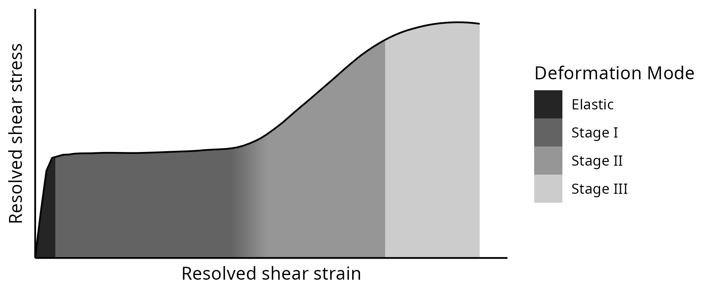
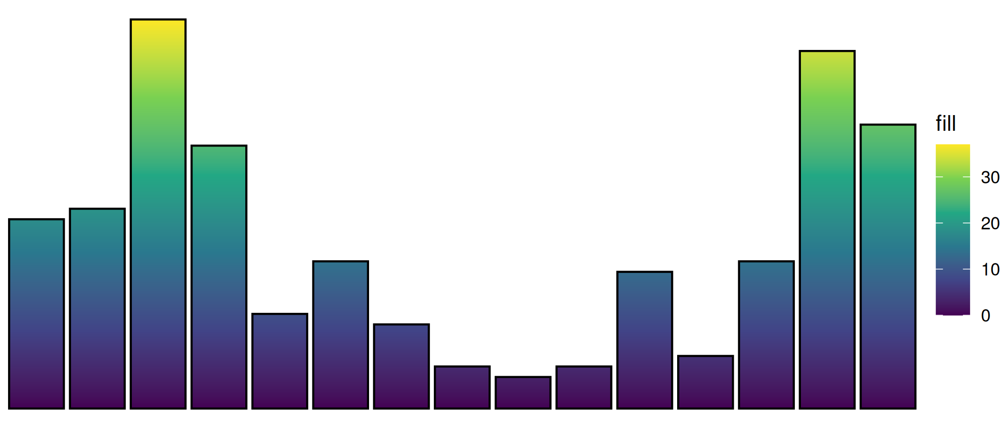
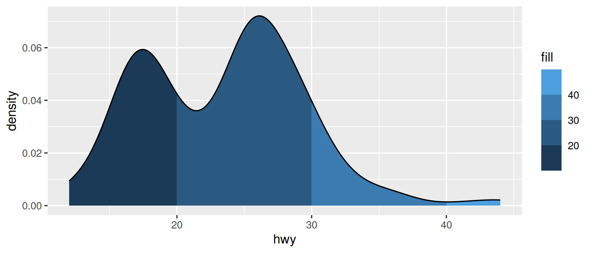
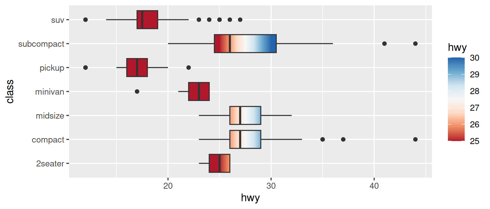

The goal of gggradient is to leverage the power of ggplot2 scale syntax to interface with the flexibility of grid::linearGradient() patterns.
Installation
You can install the development version of gggradient from GitHub like so:
# install.packages("pak")
pak::pak("hrryt/gggradient")Examples
Easily create a gradient fill along a geometry:
library(ggplot2)
library(gggradient)
ggplot(mpg, aes(manufacturer, fill = 1)) +
geom_bar(colour = "black") +
scale_fill_y_viridis_c() +
theme_void()
Discretise gradients with binned scales:
ggplot(mpg, aes(hwy, fill = 1)) +
geom_density() +
scale_fill_x_binned()
Flexibly specify gradients with the syntax of regular fill scales:
ggplot(mpg, aes(hwy, class, fill = 1)) +
geom_boxplot() +
scale_fill_x_distiller(
name = "hwy",
limits = c(25, 30),
oob = scales::oob_squish,
palette = "RdBu",
direction = 1,
group = FALSE
)